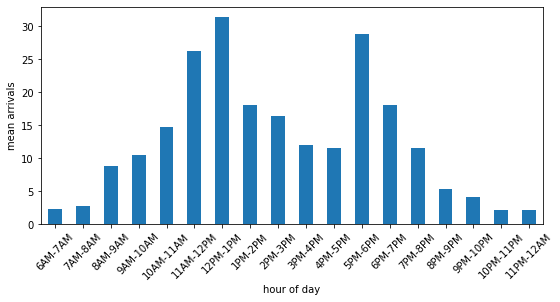

3. Data
Contents
import pandas as pd
3. Data¶
3.1. Data sources¶
All data are sourced from
Nelson. B.L. (2013). Foundations and methods of stochastic simulation. Springer.
3.2 Pre-processing¶
Non additional pre-processing of data was undertaken.
3.3. Input parameters¶
Time-dependent arrival rate¶
The data for arrival rates varies between clinic opening at 6am and closure at 12am.
NSPP_PATH = 'https://raw.githubusercontent.com/TomMonks/' \
+ 'open-science-for-sim/main/src/notebooks/01_foss_sim/data/ed_arrivals.csv'
# visualise
ax = pd.read_csv(NSPP_PATH).plot(y='arrival_rate', x='period', rot=45,
kind='bar',figsize=(9,4), legend=False)
ax.set_xlabel('hour of day')
ax.set_ylabel('mean arrivals');

Sampling distributions¶
Distributions were taken again from Nelson (2013)
Activity |
Distribution |
|---|---|
Triage |
Exponential(3.0) |
Registration |
Log Normal(mean=5.0, var=4.0) |
Examination |
Normal(mean=16, var=4.0) |
Stabilisation |
Exponential(90.0) |
Non-Trauma treatment |
Lognormal(mean=13.3, var=2.0) |
Trauma treatment |
Lognormal(mean=30.0, var=4.0) |
Prob patient requirement treatment given non-trauma |
0.6 |
Prob patient is trauma |
0.12 |
3.4 Assumptions¶
In this model trauma patients are treated completely seperately from non-trauma.